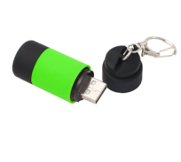
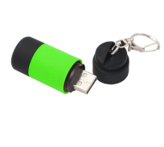

Bioelite Vert is the only distributor of environmentally friendly flashlights in the Mini Torch range.
Thanks to the LED technology, the included battery lasts much longer, so you can make the most of the flashlight.
Mini Torch flashlights are ideal for going out in nature thanks to the LED light and the aluminum + ABS housing that protects against shocks, offering increased resistance.


With a length of 5 cm and a weight of 16g, the flashlights are easy to transport and take up very little space. The flashlight is environmentally friendly, the internal battery is guaranteed for at least 250 charge-discharge cycles.
The flashlight has a keychain on it so that it can be used at any time (it can be attached to the belt or to the car keys).
If you forget to charge the flashlight at home, it can be charged in the car as you go to your destination. The flashlight can be quickly charged to any USB port.